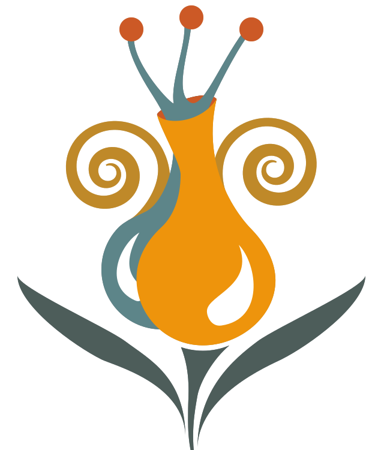

Functional anatomy of the central oxytocin system: new whole-brain mapping methods
ChairRobert Froemke

23–27 May 2027 · Rethymno, Crete
The symposia accepted for the WCNH2027 scientific programme. Session times and speakers will be added as the programme is finalised.
ChairRobert Froemke
ChairsQuirin Krabichler and Colin Brown
ChairsValery Grinevich and Jin Bao
ChairsInga D Neumann and Alexandre Charlet
ChairsErnest Blevins and Elizabeth Lawson
Further symposia will be announced as the scientific programme is finalised.